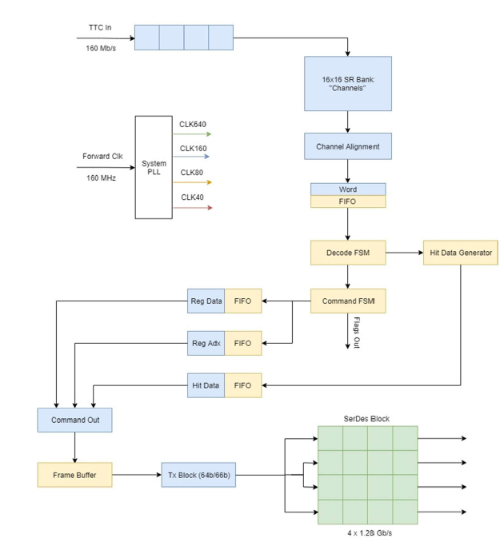

Welcome to rd53a_emulator documentation!
Build Info
- Targets Xilinx KC705 Kintex FPGA Board
- Vivado 2016.2
Description
- This is a firmware RD53A emulator. The emulator has currently been set up to communicate properly with the YARR firmware (located here https://github.com/Yarr/Yarr-fw). The main pieces of currently working functionality are listed below.
- Reading and writing of global registers. The read out registers are sent through lane 0.
- Trigger commands will output clumps of trigger data. The trigger data that comes out currently creates a checkboard pattern that can be updated by pressing the North button on the KC705.
- ECR, BCR, and CAL commands are received by the system though currently have no external impact.
- Information on the installation of YARR and using YARR can be found here https://yarr.readthedocs.io/en/latest/.
- A block diagram of the system can be seen below.
